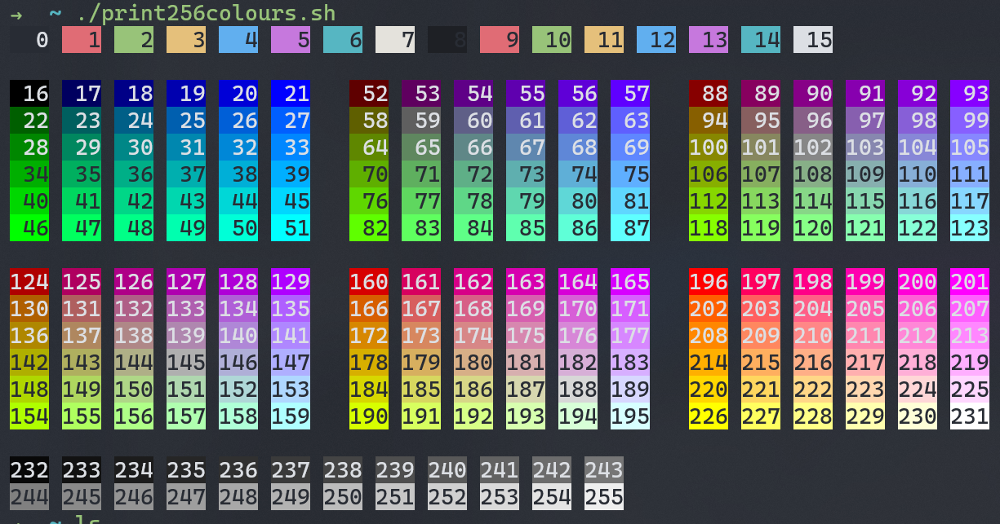
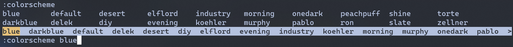
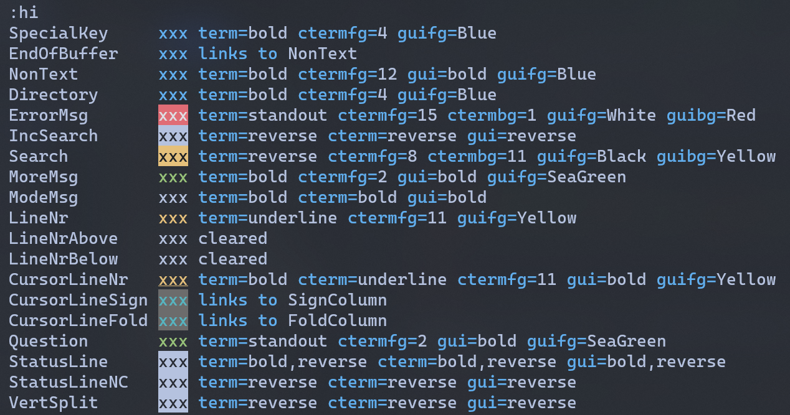

我也算是忠实的Windows用户了，装过Ubuntu和黑苹果最后还是觉得Windows用起来方便些，经过了各种的折腾也是比较习惯，偶尔的一些需求也可以用虚拟机代替，以及近两年还推出了WSL2也更加方便了开发使用；最近重新开始学习Vim也装上了WSL2，但发现Windows Terminal和vim的组合还是有很多问题需要解决的，由其默认的配色在某些状态下根本看不清字体，所以折腾了下自定义配色。
其实Vim是有很多自定义配色的插件，也尝试安装过，发现和Windows Terminal不兼容，配色非常奇怪，还是自己配色比较稳妥，如果是linux/mac用户完全可以在vimcolor上选择一个喜欢的配色进行配置
我Windows Terminal采用的是魔改后的OneHalfDark配色（一开始以为vim的问题可以用配色解决，最后发现不行）
可以看下对比效果，左侧是git bash终端默认的配色，右侧是我改动后的配色，由其在visual模式下看起来舒服很多了
256色
现在的terminal都支持256色了，vim的配置一般会用这个256个颜色，所以知道对应的几个颜色，这256色的配置是来源是terminal的scheme，可以通过脚本来查看terminal配置的256色；这是我的配置颜色

基础配置
自带配置文件
vim默认的配置路径在ubuntu下是/usr/share/vim/vim82/（这里vim82与vim版本有关），颜色的的配置文件夹在colors下，可以看到一些默认的配色，如果想要在原来的配置上魔改一下，可以从这里复制一份出来，默认的配置是default.vim。
1 | ➜ colors ls |
自定义的颜色配置放置在~/.vim/colors/下，比如我的文件名叫做diy.vim
查看及切换配置
切换配置文件配置
在编辑器中，可以通过:colorscheme +

可以用:hi（highlight的简写）查看配置中的文件，也可以查看当前哪个配置有问题，方便修改

配置文件及参数
前置配置
这些配置是从默认配置复制来的，放在配置文件最前面即可。
1 | " Remove all existing highlighting and set the defaults. |
高亮配置
在vim的配置中，针对不同的样式有不同的高亮方案，最终形成了一个有高亮的vim编辑器，常见的配置有以下三种：
1 | " Color configuration to a style |
我们一般只需要修改第一种实际带有颜色的配置即可，它的写法如下：1
hi <style_name> ctermfg=<font_color> ctermbg=<background_color> guifg=<font_color> guibg=<background_color> term=<text_style> gui=<text_style> cterm=<text_style>
第一个是样式名称，我们可以通过:hi查看想要配置的样式;
后面的配置从范围上可以分为：
- 针对彩色终端（color terminal）的配置：
ctermfg，ctermbg和cterm - 针对gui的配置：
guifg，guibg和gui - 针对常规终端：
term；因为常规终端是黑白配色的，所以没有颜色配置
从配置样式上可以分为：
- 字体颜色：
ctermfg，guifg - 背景颜色：
ctermbg，guibg - 字体样式：
cterm，gui，term
我是在终端配置的，也就是只需要配置ctermfg，ctermbg和cterm，但为了防止修改修改导致以后使用gui显示不正常，我会一同配置gui的颜色；如果不需要覆盖某种配置（比如不需要背景色），就不需要配置这个参数
Terminal和GUI配置的最大区别是terminal只可以用256色，但是GUI可以用RGB颜色来配置（更多的颜色选择），在配置terminal时我们可以对照前面提到的256色卡来判断颜色的选择。
在字体颜色的配置上，我们常用0-15（终端内配置的色彩） / 232-255（灰度）进行配置，比如ctermfg=11配置字体颜色为浅黄色
字体样式有以下选择：
- bold
- underline
- undercurl not always available, only available in GUI 一般仅在GUI中有效
- reverse
- inverse same as reverse
- italic
- standout
- NONE no attributes used (used to reset it)
以下这个配置，可以看到它设置了terminal和GUI字体颜色是黄色，在GUI和普通黑白终端中字体加粗，在颜色终端中是下划线1
hi CursorLineNr ctermfg=11 guifg=Yellow gui=bold term=bold cterm=underline
在我们能看懂配置后，就可以在原有的配置上进行魔改，设置成自己喜欢的颜色
我的配置
1 | " Diy Vim color file for Windows Terminal with One Dark |
Reference
Day 12：vim 配色方案
如何编写属于自己的Vim主题
How to control/configure vim colors
oeasy教您玩转vim - 24 - 自定颜色
Vim Doc - Syntax